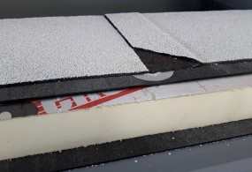

Plat dakisolatie IKO Enertherm
IKO enertherm wordt gebruikt voor het thermisch isoleren van platte daken.
Voordelen:
Lichte platen en dus gemakkelijk verwerkbaar.
Minder volume voor dezelfde isolatiewaarde.
Zeer goed beloopbaar tijdens de werkzaamheden en nadien.
Snel en eenvoudig te plaatsen.
Hoge dimensionale stabiliteit, vormvastheid en drukvastheid.
| Toepassing | Platte daken |
| Materiaal | polyisocyanuraatschuim (PIR) |
| Doe-het-zelf | Niet zelf te doen |
| Certificaat | ISSO |
| Prijs | Op aanvraag |
| Subsidie mogelijk | Niet voor woningeigenaren, wel voor VvE’s |
| Isolatiewaarde | Isolatiewaarde 0,022 W/m2K |